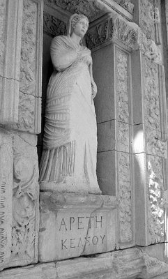

Günümüzde Korfu denen adada yaşayan Fayakların iyilikte dillere destan Alkinoos adında bir kralları ve onun da Arete adında, güzel mi güzel bir eşi vardı.
Adı "erdem" anlamına gelen kraliçe Arete'yi halkı da çok seviyor, çok sayıyordu... İyilikte ve güzellikte bir benzeri daha olmayan Arete ile kocası kral Alkinoos'un hem evlilik yaşamları, hem de ülkeleri Korfu adasındaki halkın mutluluğu, binyıllar süresince sayısız sanat yapıtlarına esin kaynağı oldu... Çünkü Alkinoos'un dünya görüşü, sanata saygısı, insanlık anlayışı, özgürlük tutkusu ve yaşadığı coğrafyada tam bir köle olarak algılanan "kadın" kimliğine bakışı; değil ilkçağ uygarlıklarının, yeniçağların bile en gözde erdemleriydi... Haliyle Alkinoos, karısı kraliçe Arete'yi her zaman el üstünde tutuyordu.
Hiçbir kadın böyle sayılmadı yeryüzünde,
Hani erkeğinin buyruğunda, evinde yaşayan hiçbir kadın.
Hem kocası hem çocukları saydı onu yürekten
Halkı da bir tanrıça gibi baktı ona.
Tatlı sözlerle selam verirlerdi kente inince o,
Yatıştırırdı bütün kavgalarını erkeklerin.
Kadının "erdem" demek olduğunu hiç unutmayan kral Alkinoos; erkeğin başarısız olduğu yerlerde, kadının inceliği ve bazı özel yetenekleriyle daha başarılı olduğunu deneyimleriyle biliyordu. Bu yüzden de Fayakların sarayında; sevgi, dostluk ve saygınlığa dayalı söz üstünlüğü vardı kraliçe Arete'nin. Konuklarını ağırlamada, cömert sungularda hep onun sözü geçerdi. Yalnız kral Alkinoos değil, bütün Fayakların üst düzey yöneticileri, danışmanları kraliçelerinin görüşlerine her zaman öncelik tanırlardı. Zaten bu yüzden olacak, ülkenin insanları da hak ettikleri gibi barış ve bolluk içinde yaşıyordu. İşte bu mutlu ülkenin kralı Alkinoos'la kraliçe Arete'nin güzel mi güzel kızları Nausikaa; her zamanki gibi gene en sevdiği birkaç arkadaşı ve yardımcılarıyla birlikte, saraylarına yakın ırmakta hem yıkanıp serinlemeye, hem de çamaşırlarını yıkamaya gitti... Bir ara ırmağın kıyısındaki bir korulukta, çıplak ve yara bere içinde, mahzun bir yabancı gördü. Bu garip adam, on yıl süren Troya savaşı dönüşü sırasında gemisi batan ve bütün kürekçi arkadaşlarını yitirip bu adaya sığınmak zorunda kalan ünlü kral Odisseus'tu. Tabii onun hakkında hiçbir şey bilmeyen ve yardıma muhtaç durumundan çok etkilenen iyi yürekli prenses güzel Nausikaa, doğruca bu çıplak adamın yanına gitti. Odisseus az önce kopardığı bir zeytin dalıyla önünü örtmeye çalıştı hemen...
Birlikte çamaşır yıkamaya geldiği kız arkadaşlarının ve hizmetlilerin çalılıklara doğru kaçıştıklarını görünce de çok şaşırdı Nausikaa... "Kızlar, nerelere saklandınız öyle?" diye çıkışmaya başladı. "Böyle dalgalı denizde vurgun yemiş yara bere içindeki bir adamdan çıplak diye kaçılır mı? Bir düşman mı sandınız bu adamı yoksa? Hani Fayakların ülkesine savaş getirecek bir adam? Buraya savaş getirecek adam daha anasından doğmadı! Hiçbir zaman da doğmayacak! Biz burada, kavgasız dövüşsüz barış içinde yaşarız. Ürettiklerimizi de gerektiğinde dost bellediğimiz insanlarla aynı sofrada bölüşürüz. Bize sığınan herkese de hiç karşılıksız kollarımızı açarız!"
Bu sözleri duyunca kızlar, sindikleri çalılıklardan gerisingeri geldiler koşa koşa. Nausikaa onlardan birkaç parça çamaşır vermelerini istedi yabancıya. Sonra da;"Kuytu bir yere götürüp onu iyice yıkayın!" dedi. Bunun üzerine kızlar, Fayakların kralının giydiği birkaç parça kurumuş giysiyle yağ ibriğini aldılar ve Odisseus'u ırmağın kuytu bir yerine götürdüler. Ama Odisseus tek başına yıkanacağını söyleyip kızları yanından uzaklaştırdı...
Odisseus yer yer yosun tutmuş bedenini ırmağın duru sularında arındırırken, tanrıça Atena da güzellik veren sular döktü onun başından aşağı. Odisseus tanrıçanın sularıyla yıkanıp güzelleşince, altın ibrikteki zeytinyağıyla uzun uzun ovdu acılı, bereli bedenini. Azgın dalgalar döve döve, göğsünü, bacaklarını yer yer morartmıştı... Odisseus giyinip kuşandıktan sonra deniz kıyısına gidip oturdu... Onu yakından görünce yeniden şaşkına döndü Nausikaa! Hemen hizmetçilerinin yanına gitti. "Beni dinleyin, dostlarım," diye başladı. "Hani Olimposlu tanrıların izni olmasa bizim topraklarımıza gelemezdi bu adam. Demin yüzüne bakılmaz gibi geldiydi bana. Şimdiyse bir tanrıya benziyor! Hani diyorum içimden, bu adam bizimle burada kalsa. Kalsa da onunla evlensem... Haydi kızlar, çabuk yiyecek içecek bir şeyler verin ona!.."
Kızların getirip bol bol sundukları yiyeceklerle tıka basa doydu Odisseus... Hani yıllardır bir yemek yüzü bile görmemişti... Bu arada kızlar, el birliğiyle yıkayıp kuruttukları tertemiz çamaşırları katlayıp katlayıp arabaya yerleştirdiler... Nausikaa da deniz kıyısındaki Odisseus'un yanına gitti. "Hadi kalk yabancı!" diye söze başladı. "Seni babamın evine götüreyim. Akıldan, yürekten yana çok üstün biridir o. Fayakların da yöneticisidir. Ben önden arabayla giderken, sen kızlarla arkadan gelirsin..."
Saraya vardığında büyük bir konukseverlikle karşıladılar Odisseus'u. Hemen giydirip kuşattılar; sıcak bir dostlukla ağırlamaya başladılar. Kral Alkinoos, bu kaza kurbanı konuğuna şiirli-söyleşili bir yemek şöleni düzenletti ertesi akşam. Haliyle sarayın demirbaş kör ozanı Demodokos da, doğaçlama söylediği şiirleriyle şölenin baş yönlendiricisiydi. Bu ozan bir ara Troya savaşıyla ilgili olarak kendi üretimi uzun bir ezgiye başladı. Helena adlı güzeller güzeli bir kadının, sözde Troyalı bir prense olan aşkı yüzünden çıkan ve her iki halkın çiçeği burnunda nice gençlerinin kırılıp kırılıp gitmesine neden olan savaşı dillendiriyordu yanık yanık... Yunanlı Başkral Agamemnon, kaçırılan Helena'nın namusunu temizlemek için başlattığı bu savaşın sonunda Troyalı kadınları ve hazineleri alıp götürdüğü yetmiyormuş gibi, bütün kenti baştan sona ateşe verdirmişti... Savaşta sağ kalanların kimileri de ülkelerine dönerken hasat vermez denizlerde yaşamlarını yitirmişlerdi... Sazıyla hep bunları dillendiriyordu ozan Demedokos... Bu ezgilerden çok etkilenen Odisseus, bir ara kendini tutamayıp gizli gizli ağlamaya başladı... Bunu gören kral Alkinoos, konuğunun kulağına eğilip gözyaşlarının nedenini sordu. Odisseus da, zoraki katıldığı Troya savaşıyla ilgili bütün serüvenini yüksek sesle, bölük pörçük anlatmaya başladı... Bu savaş sırasında gördüğü ve yaşadığı acı şeylerden çok şey öğrendiğini de söyledi... En önemlisi, savaşların olduğu bir dünyada insanın insanlaşamayacağını artık çok iyi anladığından söz etti; "Akdeniz coğrafyasında sizin gibi barış ve bolluk içinde yaşayan mutlu insanlar görmekten çok mutluyum," dedi kral Alkinos'a.

Arete (Ephesus kenti)
On yedi yıldır yüzünü göremediği karısı ve çocuğuna doğru dönüş yolculuğu sırasında gemisinin batıp bu adaya sürüklenip gelmesinin kendisi için artık büyük bir kazanım olduğunu ekledi sözlerine. "Çünkü kızınız güzel prenses Nausikaa'nın beni buraya alıp getirmesinden daha büyük bir mutluluk olabilir mi? Sizlerin beni bu şekilde ağırlamanız karşısında da çok duygulandım. Demodokos'un güzelim şiirleri de beni çok etkiledi..." Daha başka şeylerden de söz etti Odisseus. Bütün bunları dinleyen kral Alkinoos da konuğunun içtenlikle anlattığı uzun serüvenlerinden hem çok etkilendi, hem de bir düş kırıklığına uğramanın üzüntüsünü yaşadı... Çünkü çok beğendiği bu beklenmedik konuğu Odisseus'un, az öncesine kadar damadı olmasını bile geçirmişti içinden!.. Üstelik kızı Nausikaa'nın kaçamak bakışlarından, ona büyük bir tutkuyla vurulduğunu da sezinlemişti...
Artık Odisseus'un evli olduğunu öğrenen ve buna yalnızca üzülmekle yetinen güzel Nausikaa, kral Alkinoos ve kraliçe Arete; konuklarının ülkesine sağ salim dönebilmesi için büyük bir gemi hazırlatıp donattılar. İçlerini en değerli armağanlarla tıka basa doldurdular...
Birkaç gün sonra halkın da katılımıyla onu yolcu ettiler. Ama Odisseus'a diş bileyen tanrı Poseydon, seyir halindeki bu gemiyi denizin ortasında taşlaştırdı! Bunu öğrenen kral Alkinoos da tanrı Poseydon'un öfkesini yatıştırmak ve konuğunun dönüş yolunu açmak için, tanrının istediği yirmi boğayı kurban etti...